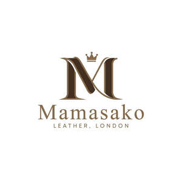

Trade Mark Journal No.2025/031 1 August 2025
UK00004236359 19 July 2025 (18,25)

- Class 18
- Leather; Tanned leather; Saddlery of leather; Leather handbags; Laces (Leather -); Leather laces; Leather for shoes; Leather straps; Straps (Leather -); Leather thongs; Leather briefcases; Leather purses; Boxes of leather or leather board; Leather for furniture; Leather bags; Leather wallets; Studs of leather; Straps of leather [saddlery]; Leather pouches; Pouches of leather; Leather cord; Leather leashes; Leashes (Leather -); Leather for harnesses; Leather suitcases; Bands of leather; Briefcases [leather goods]; Handbags made of leather; All-purpose leather straps; Briefcases made of leather; Leather boxes; Boxes of leather; Leather twist; Leather luggage straps; Leather cases; Leather thread; Thread (Leather -); Trimmings of leather for furniture; Furniture (Leather trimmings for -); Leather trimmings for furniture; Labels of leather; Leather shoulder belts; Belts (Leather shoulder -); Bags made of leather; Furniture coverings of leather; Coverings (Furniture -) of leather; Harness made from leather; Straps (Leather shoulder -); Leather shoulder straps; Leather bags and wallets.
- Class 25
- Leather shoes; Trousers of leather; Leather jackets; Leather pants; Leather waistcoats; Leather garments; Leather slippers; Leather clothing; Clothing of leather; Leather (Clothing of -); Leather coats; Leather dresses; Leather suits; Suits of leather; Leather headwear; Leather belts [clothing]; Clothing made of leather; Slippers made of leather.
Westbound Marketing Services Ltd